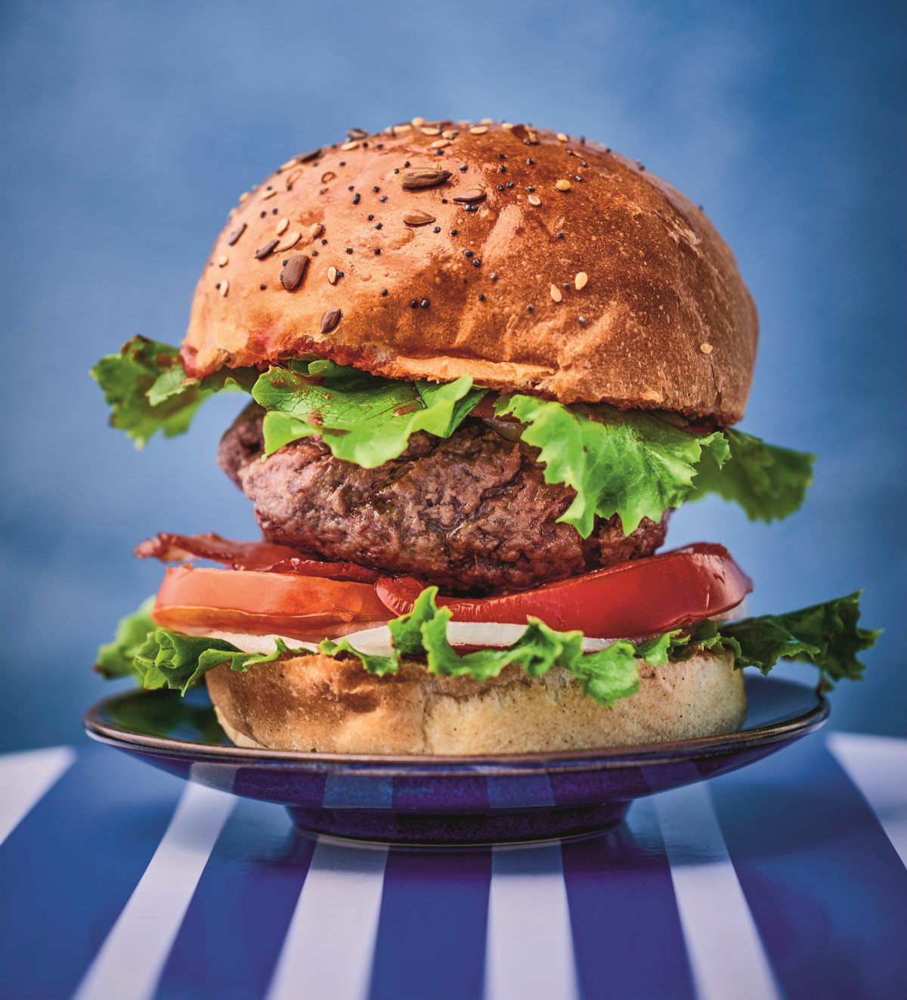

Burger

Description
These burgers offer a rich and meaty taste, with a punch of zesty herbs that can be customized with your preferred flavors. A few simple key ingredients help to consistently create juicy hamburger patties, no matter which cooking method you prefer.
ingredients
- Ground chuck
- Crushed crackers or Panko bread crumbs
- Worcestershire sauce
- Egg
- Milk
- Seasonings
Steps
- First, set out a large mixing bowl and add in the ground beef, crushed crackers, egg, Worcestershire sauce, milk, and spices.
Use your hands to thoroughly combine until the mixture is very smooth.